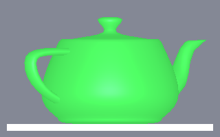
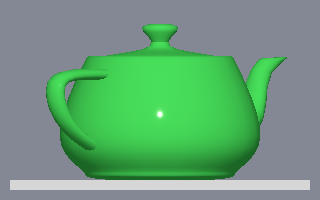

Changes to Qt Quick 3D
Qt 6 is a result of the conscious effort to make the framework more efficient and easy to use.
We try to maintain binary and source compatibility for all the public APIs in each release. But some changes were inevitable in an effort to make Qt a better framework. Parts of the Qt Quick 3D API have been substantially modified.
In this topic we summarize those changes in Qt Quick 3D, and provide guidance to handle them.
RHI
From Qt 6.0 onwards, the default adaptation of Qt Quick always renders via a graphics abstraction layer, the Qt Rendering Hardware Interface (RHI), provided by the QtGui module. This means that, unlike Qt 5, no direct OpenGL calls are made by the scene graph. Rather, it records resource and draw commands by using the RHI APIs, which then translate the command stream into OpenGL, Vulkan, Metal, or Direct 3D calls. Shader handling is also unified by writing shader code once, compiling to SPIR-V, and then translating to the language appropriate for the various graphics APIs.
For Qt Quick 3D the biggest change in Qt 6.0 is the migration to the common Rendering Hardware Interface, which allows Qt Quick 3D to run on Direct3D, Metal and Vulkan in addition to OpenGL and OpenGL ES.
Qt Quick and Qt Quick 3D are now fully unified in this regard. Any configuration setting related to the RHI, for example, which graphics API to choose to render with, are applicable to both.
See Qt Quick 3D Graphics Requirements for further details.
Other API changes
QML import version
Starting with Qt 6.0, the version number for QML import statements is the same as the Qt version number. It is now also possible to import a module without specifying a version: this will import the latest version of the module.
Lighting
Light brightness now represents an energy multiplier defaulting to 1.0, where Qt 5 would use a percentage value defaulting to 100. In practice this means that all brightness values should be divided by 100.
SceneEnvironment.probeBrightness is renamed to probeExposure and is also redefined to be a multiplier with a default value of 1.0. That is, all probeBrightness values should be renamed to probeExposure and divided by 100.
AreaLight has been removed for performance reasons. In many cases it can be replaced with SpotLight, which was added in Qt Quick 3D 5.15.
Custom Materials
The custom materials API has been completely reworked in 6.0. This means any existing custom materials will have to be substantially rewritten. See the CustomMaterial documentation for details of the new API.
Post-processing Effects
Effect has been enhanced to allow for shader code that is very close to what CustomMaterial supports, following the same patterns when it comes to structure and built-in keywords. This means that existing effects involving custom shader code will need to be migrated before they can function in Qt 6.0. See the Effect documentation for details.
Principled Material
The PrincipledMaterial QML type has been greatly improved in Qt Quick 6.0, and now more closely follows the principles of Physically Based Rendering. Imported models should now render correctly without changing properties of the materials. Existing materials will need to be changed to undo any compensations for previous inaccuracies.
| PrincipledMaterial in Qt 5 | PrincipledMaterial in Qt 6 |
|---|---|
 |  |
Some properties change their defaults:
- metalness defaults to 0 instead of 1.
- specularAmount defaults to 0.5 instead of 0.
Default Material
Some properties change their defaults:
- specularRoughness defaults to 0 instead of 50.
Predefined materials
There are no predefined materials included in QtQuick3D 6.0. Any materials added in future releases will probably not be compatible with the old ones. The Materials import does not exist. (The CustomMaterial type is moved to the base QtQuick3D import.)
These are the material QML types that have been removed in Qt 6.0:
- AluminumAnodizedEmissiveMaterial
- AluminumAnodizedMaterial
- AluminumBrushedMaterial
- AluminumEmissiveMaterial
- AluminumMaterial
- CopperMaterial
- FrostedGlassMaterial
- FrostedGlassSinglePassMaterial
- GlassMaterial
- GlassRefractiveMaterial
- PaperArtisticMaterial
- PaperOfficeMaterial
- PlasticStructuredRedEmissiveMaterial
- PlasticStructuredRedMaterial
- SteelMilledConcentricMaterial
Tessellation and displacement maps
Model tesselation mode is gone due to increased focus on supporting embedded hardware. In addition, as a result, displacement map support has been removed from materials. Similar effects can be achieved with a custom material.
Qt Quick Items as children of 3D Nodes
While syntactically identical, the way 2D child items are handled is quite different internally. In Qt 6.0 there is no implicit render to texture step. Rather, the 2D Qt Quick content is rendered in line, with the appropriate perspective projection, in the same render pass, which provides better performance, lower resource usage, and in some cases potentially improved visual fidelity (with Text, for example). See Qt Quick 3D Scenes with 2D Content for an overview.
If going through a texture is important for some reason (clipping, opacity), make the 2D Item subtree a layer explicitly by setting layer.enabled: true. This way the behavior is closer to what Qt 5.15 provided.
The 2D content is no longer centered at the parent Node's origin. Rather, it is the top-level 2D Item's top-left corner that is placed to the 3D Node's origin. Therefore, the top-level 2D Item will often want to specify an anchor, such as, anchors.centerIn: parent, to get results matching Qt 5.15.